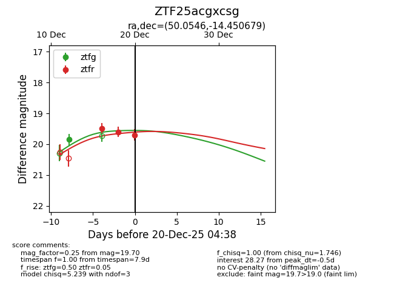
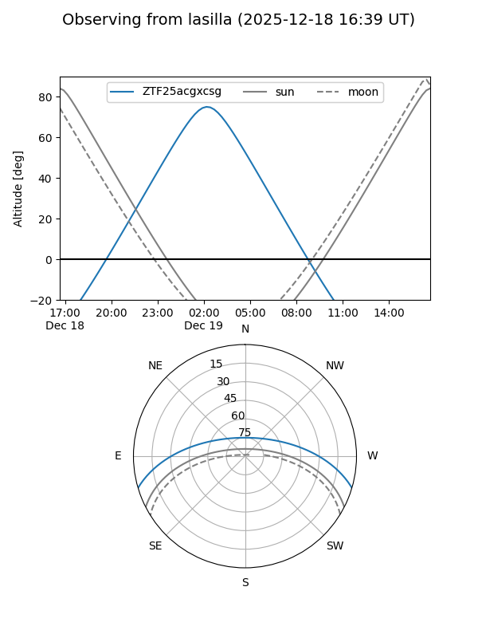
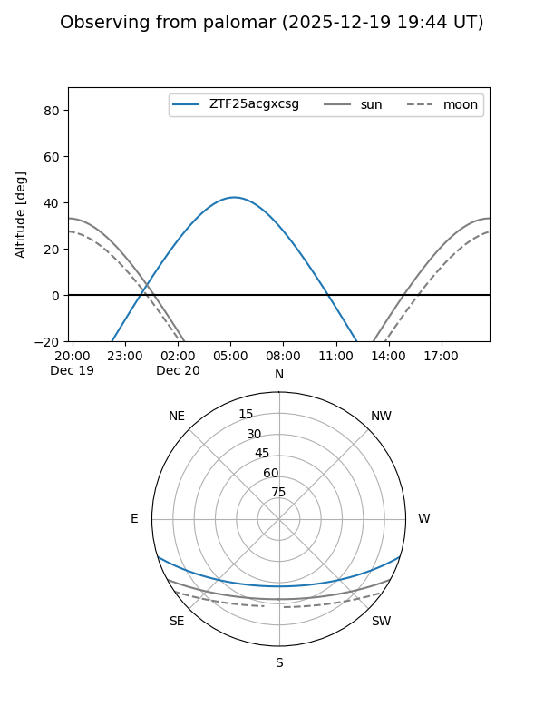
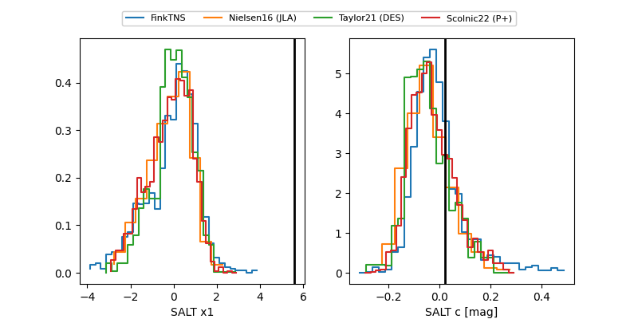

ZTF25acgxcsg
Target ZTF25acgxcsg at 2025-12-18 10:45
Aliases and brokers:
FINK: fink-portal.org/ZTF25acgxcsg
Lasair: lasair-ztf.lsst.ac.uk/objects/ZTF25acgxcsg
ALeRCE: alerce.online/object/ZTF25acgxcsg
alt names
ZTF25acgxcsg (ztf,fink_ztf)
Coordinates:
equatorial (ra, dec) = 50.0546,-14.45068
equatorial (HMS+DMS) = 03:20:13.10,-14:27:02.44
galactic (l, b) = (200.4448,-53.15954)
Photometry
last ztfg=19.85, ztfr=19.48
1 ztfg, 1 ztfr detections
Lightcurve

Visibility


Additional plots
